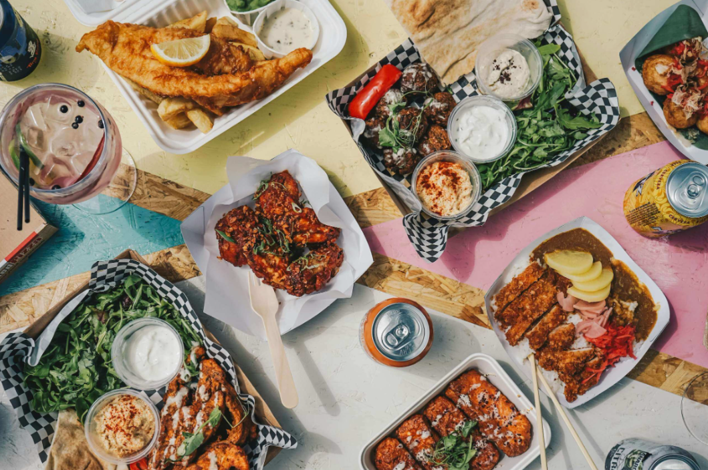

Доставка вкусных бизнес-ланчей по Москве
Мы готовим и доставляем свежие, полезные и сбалансированные бизнес-ланчи прямо в ваш офис. Каждый день новое меню из сезонных продуктов от проверенных поставщиков. Экономьте время — наслаждайтесь вкусной едой!
Почему выбирают ProLunch
- Только свежие продукты — готовим утром из фермерских ингредиентов
- Точная доставка — строго в выбранный вами интервал
- 50+ блюд каждую неделю — новое меню каждый день
- Свой идеальный ланч — собирайте в конструкторе под свои вкусы
- Скидки для постоянных — чем чаще заказываете, тем выгоднее
Самые популярные блюда недели
| Топ № | Блюдо | Состав | Вес | Цена |
|---|---|---|---|---|
| 1 | Филе миньон с овощами гриль | Говядина, баклажаны, перец, соус демиглас | 320 г | 420 ₽ |
| 2 | Лосось с киноа и авокадо | Запечённый лосось, киноа, авокадо, овощи | 350 г | 690 ₽ |
| 3 | Лазанья болоньезе | Классическая итальянская лазанья | 320 г | 580 ₽ |
| 4 | Греческий салат с курицей | Курица гриль, фета, оливки, свежие овощи | 450 г | 390 ₽ |
| 5 | Стейк из говядины с картофелем | Стейк медиум, картофель по-деревенски, соус | 380 г | 750 ₽ |
| 6 | Поке с тунцом | Тунец, рис, авокадо, манго, соус | 350 г | 780 ₽ |